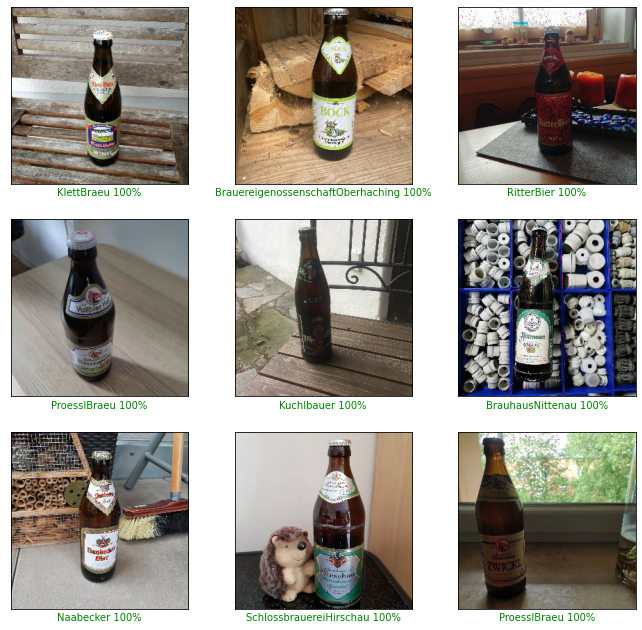
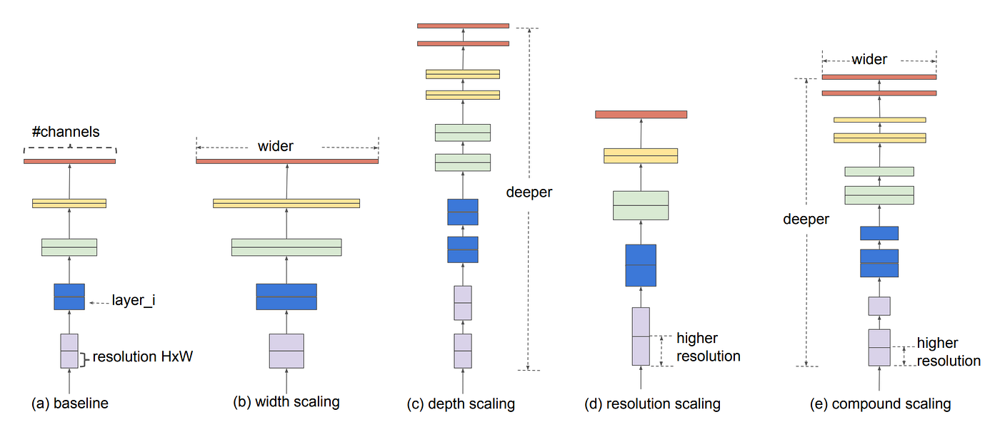

As part of a Deep Learning Challenge at OTH Regensburg, our team developed a computer vision system to classify beer bottle images into 49 German brewery categories, improving upon a baseline model with approximately 80% accuracy. I contributed to designing, training, and evaluating six model variants using transfer learning, comparing architectures including EfficientNetV2, InceptionV3, Inception-ResNetV2, ResNet-18, and an Xception + ResNet-50V2 ensemble. The training strategy combined feature extraction using frozen pre-trained backbones with selective layer fine-tuning, supported by data augmentation to address the limited dataset size. The best-performing model, based on EfficientNetV2M, achieved 99.79% accuracy on the final test set.


| Metric | Result | Notes |
|---|---|---|
| Classes | 49 | Beer brands / breweries |
| Dataset size | 6,386 images | 2,537 train · 649 val · 1,274 test · 1,926 final test |
| Baseline accuracy | ~80% | Given starting point for the challenge |
| Best model accuracy | 99.79% | EfficientNetV2M, final test set |
| Model | Base architecture | Parameters | Validation | Test | Final test |
|---|---|---|---|---|---|
| 1 | EfficientNetV2S | 20.4M | 99.38% | 99.45% | 99.38% |
| 2 | EfficientNetV2M | 53.2M | 99.54% | 99.76% | 99.79% |
| 3 | Inception-ResNetV2 | 54.4M | 95.84% | 97.10% | 97.92% |
| 4 | Xception + ResNet-50V2 (ensemble) | 44.4M | 91.68% | 91.60% | not submitted |
| 5 | ResNet-18 | 11.2M | 99.06% | 98.73% | 97.69% |
| 6 | InceptionV3 | 21.9M | 96.92% | 96% | 96.11% |